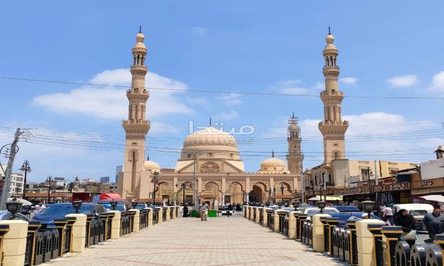

This is our places for our clients this week we hope to be good for you
| Pyramids, awe-inspiring ancient marvels, boast triangular or polyhedral bases and converging sides, culminating in majestic pinnacles. Crafted by diverse civilizations for religious, burial, and monumental purposes, these structures epitomize architectural brilliance and cultural symbolism. Historically significant, they captivate with their enduring legacy, representing human ingenuity across epochs and continents. Each pyramid tells a tale of ancient civilizations, reflecting the profound connection between architecture, spirituality, and the enduring imprint of cultures on the landscape of history. |
|
Stretching across Egypt, the Western Desert unveils a mesmerizing tapestry of arid terrains and distinctive geological wonders. A repository of history and natural splendor, it cradles ancient oases, captivating rock formations, and vestiges of prehistoric civilizations. This expansive canvas, etched with the imprints of time, narrates tales of resilience and adaptation. From the windswept dunes to the rugged outcrops, the Western Desert invites explorers to traverse its timeless landscapes, where echoes of bygone eras harmonize with the whispers of the present, creating an unparalleled fusion of history and nature. |
|
| Nestled in proximity to Luxor, Egypt, Karnak Museum stands as a treasure trove of artifacts sourced from the venerable Karnak Temple complex. This cultural haven unveils a tapestry of relics, offering profound insights into the annals of ancient Egyptian history. With exhibits spanning religious practices, artistic expressions, and glimpses into daily life, the museum becomes a conduit to comprehend the nuances of this extraordinary civilization. Immerse yourself in the allure of bygone eras as Karnak Museum transforms into a portal bridging the contemporary world with the mystique of antiquity. |
|
Crafted to captivate, the hotel stands as a beacon for tourists, boasting opulent amenities, awe-inspiring vistas, and unparalleled services. Its design intricately weaves comfort and hospitality, promising an unforgettable sojourn. A harmonious fusion of luxury and warmth, the hotel beckons travelers into a realm where every detail contributes to an enchanting experience. From the lavish accommodations to the impeccable services, it orchestrates a symphony of delight, leaving an indelible mark on the memories of those fortunate enough to bask in its allure. |
|
| Perched proudly on Gezira Island, Cairo Tower, a symbol of modernity, grants unparalleled vistas of Cairo's dynamic skyline. A true icon in Egypt's capital, it gracefully blends architectural splendor with panoramic allure. Welcoming visitors to ascend its heights, the tower becomes a gateway to behold the city's beauty, where ancient marvels and contemporary vibrancy coalesce. As the sun sets, casting a golden glow upon Cairo, the tower stands as a testament to the city's rich history and forward-looking spirit. |
|
Elsayed Elbadawy Mosque, a prominent landmark in Tanta, Egypt, exemplifies splendid Islamic architecture. Revered for its cultural and religious significance, the mosque captivates visitors with its spiritual ambiance and distinctive design, becoming an integral part of Tanta's rich heritage. The intricate details of the mosque's structure narrate tales of devotion, making it a cherished destination for those seeking both architectural beauty and a profound connection to Egypt's Islamic heritage. |  |